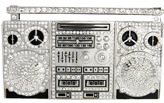

4 Da Record Beats is the industry standard for non-exclusive and exclusive instrumentals.
We set the trend in music production websites and nothing can compare.We have produced music for many artist and scored music for various television
shows.We deliver quality music production and world class customer service.We use the very newest in music technology to deliver hot music tracks for
your productions. Rhythm and blues Hip Hop Techno House Gospel Jazz
just to name a few. We deliver your musical content in the folowing file formats.
File formats
Wav Windows Os
Aiff Mac Os
Rex Reason Rex loop player

Our Beat Making arsenal includes
Roland Fantom G
Yamaha Motif
Cubase 6
Reason 5
Roland VP 9000
Hip-Hop Defined:
Hip-hop is a form of popular music that's comprised mainly of emceeing and deejaying. The other two components that complete the four elements of hip-hop are graffiti and breakdancing. As hip-hop evolves into big business, the four elements (emceeing, deejaying, graffiti, and breakdancing) are constantly being merged with others like clothing trends, slang, and general mindset.
Hip-Hop Started in the Bronx:
A product of cross-cultural integration, rap is deeply rooted within ancient African culture and oral tradition. Hip-hop is believed to have originated in the Bronx by a Jamaican DJ named Kool Herc. Herc's style of deejaying involved reciting rhymes over instrumentals. At house parties, Herc would rap with the microphone, using a myriad of in-house references. Duplicates of Herc's house parties soon drifted through Brooklyn, Manhattan. Herc and other block party DJs helped spread the message of hip-hop around town and Some of the earliest rap songs ever recorded include "King Tim III (Personality Jock)" by Fatback Band and "Rapper’s Delight" by the Sugarhill Gang. The latter reached the #36 spot on the Billboard charts (a huge feat by 1970's standards), thus demonstrating hip-hop's ability to draw commercial appeal.
I didn't get my links?
No problem. You can re-download it from the site. Just use the login button on the home page (top right nav). Enter your email address and request a password if you never logged in yet.
Do I own the track after I buy it and do I get a printed agreement?
No, you do not own the beat. You are buying a non exclusive beat. All non exclusive beats are LEASED not SOLD. You are leasing the rights to use it. By downloading the track, you are bound to the terms and conditions of non exclusive use. All tracks are downloaded from the site and do not come with printed terms. If you want to “own it” you would need to purchase the exclusive rights to it. Most beats are available as exclusive rights if you request them. Prices range from $450-$1200 depending on the beat/producer. Exclusive beat sales come with contracts, separated production tracks and shipped on disk. If you buy the exclusive rights, the beat would also be removed from the site for good and is never sold to anyone else again.